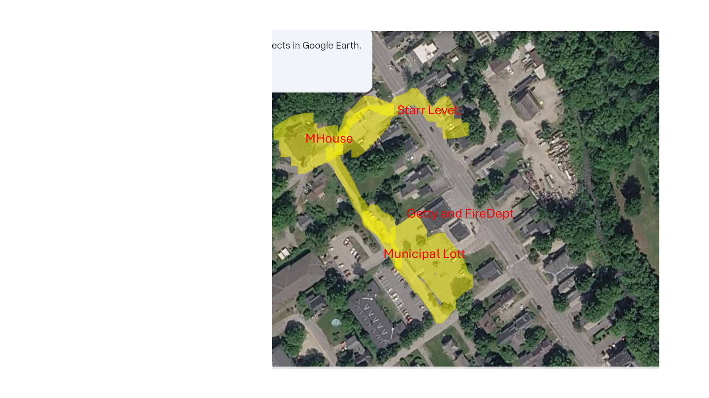
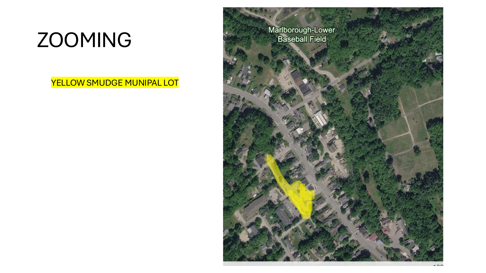
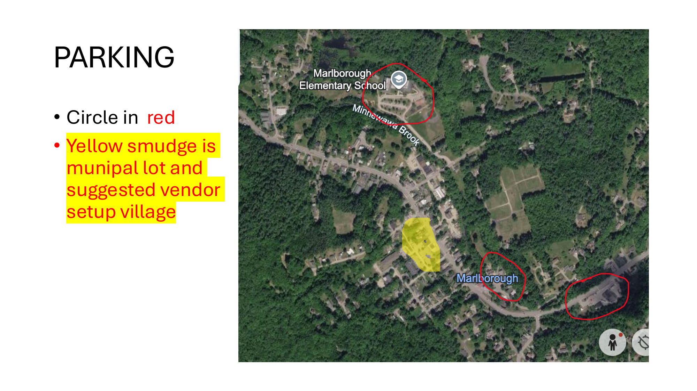
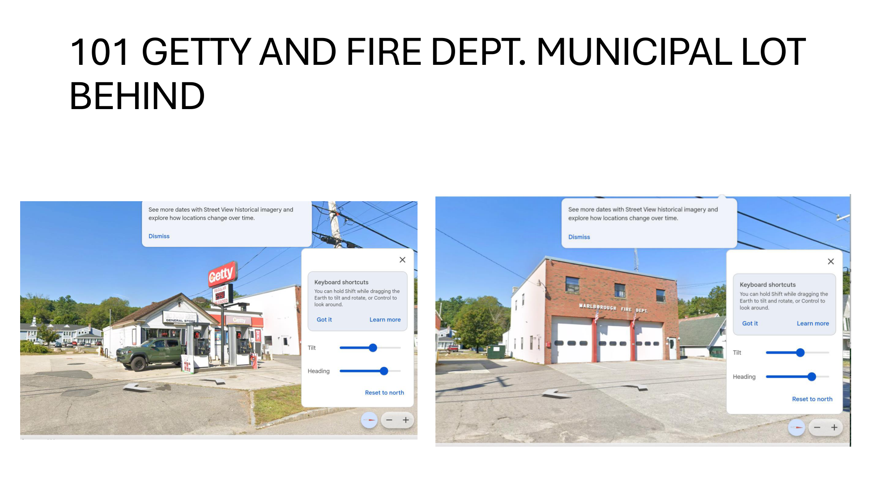
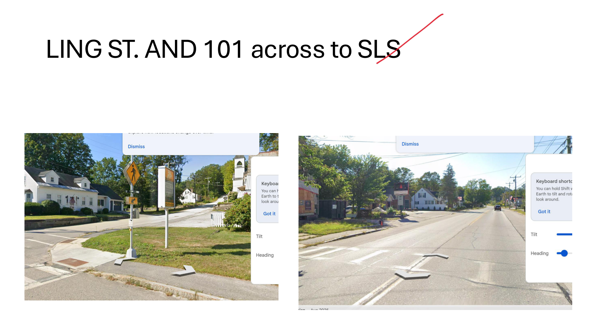
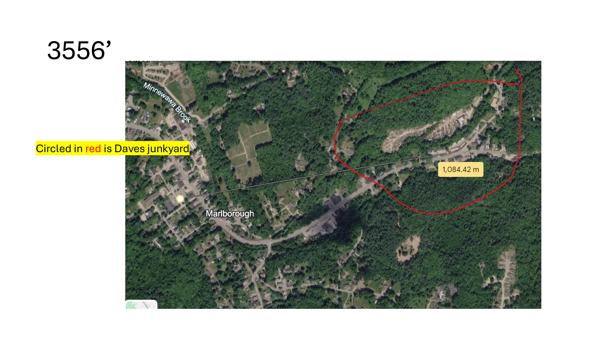
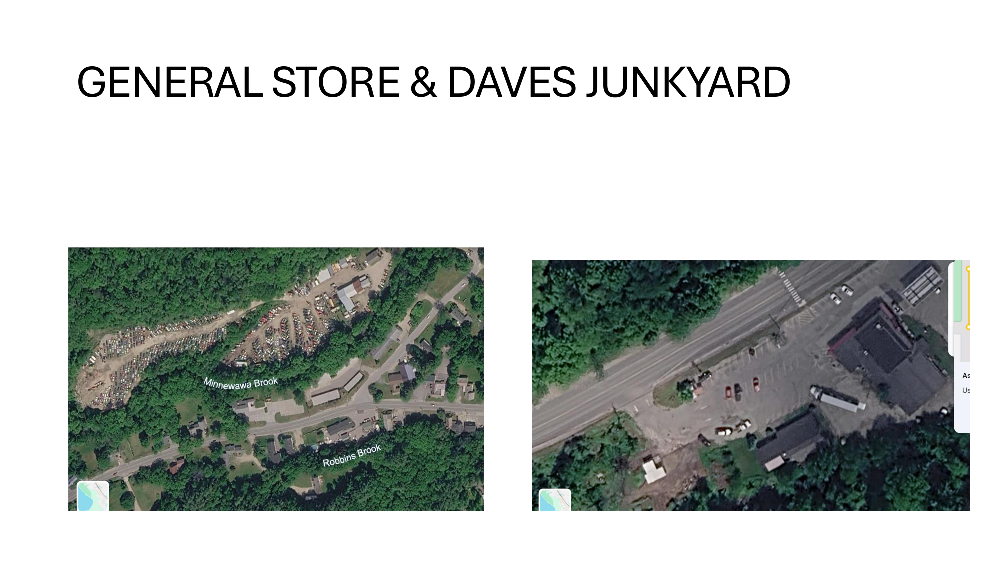
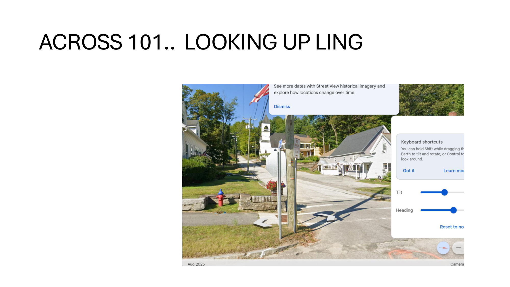
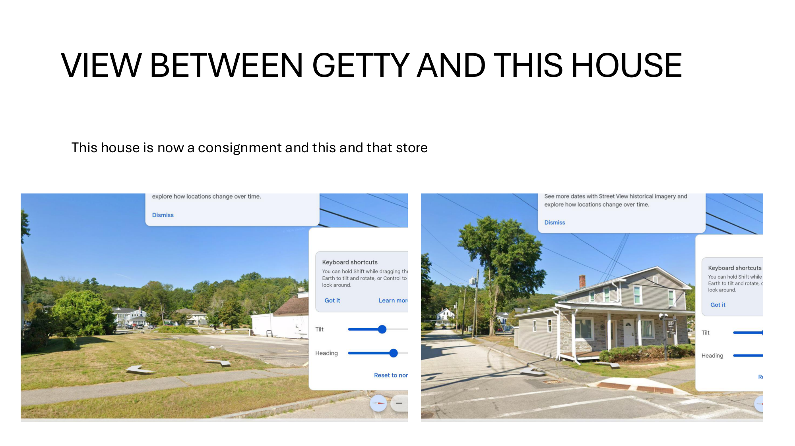

A holiday-themed pop-up village built around our existing buildings in the center of Marlborough, NH — tents, lights, music, food, and craft vendors transforming the town core into a walkable Weihnachtsmarkt experience for the Monadnock Region.
The municipal lot, the Church, the Main House, and Stark Level Solutions form a connected festival campus inside the real town — not a fairground bolted onto it.
Two weekends, Friday–Sunday. Build, run, strike. Start-small option on the table per Lindsay: prove the details, then expand.
The site plan, staffing model, and perimeter design are reusable: summer music festival, theatrical events, fall Halloween fling, community events.
An attention-catching anchor event for Marlborough, Keene, and the wider Monadnock Region, capable of accommodating thousands of visitors.
Lindsay Buchanan founded and chairs the Amherst German Christmas Market (Amherst, NH) — the direct template for this event and the documented track record behind our town-approval case.
| Amherst GCM | What it proves |
|---|---|
| Inaugural 2022 drew ~4,500 visitors; grew to ~20,000 | Demand for this format in southern NH is real and large |
| 501(c)(3) nonprofit, volunteer-run, on the Village Green | Community-anchored model that towns approve |
| 55+ hand-picked craft vendors, German imports, local farms | Vendor pipeline and curation experience |
| Biergarten with glühwein and German beer; Santa & Krampus; live music | Programming blueprint for our Church beer hall |
| Ticketed entry ($10/adult, kids 13&under free), capped at 1,000/hour | Crowd-management precedent towns respect |
| Off-site parking (Walmart lot) with shuttle service | Validates our satellite-lot + Caboose plan |
Sources: amherstchristmasmarket.org · Nashua Telegraph (Dec 2022) · Amherst BOS minutes (2025)

Winter beer garden with a holiday selection of beverages (glühwein, German beer) and themed food offerings. Indoor vendor spaces possible at ~10'×10' equivalents in the chapel.
Christmas through and through, room by room: arts & crafts, ornament makers, themed installations per room as discussed.
Vendor check-in and pre-set-up, green room for performers and workers, production base, and restrooms.
Candidate areas for additional vendors and activities along the lane joining the municipal lot and Marlborough House.
Bathrooms exist at all our locations, but at this event scale a set of restroom trailers is likely necessary. Goal: avoid port-a-potties. In discussion
Per the Amherst blueprint: German and Christmas music, Santa (and Krampus) photo ops, festive light displays. Programming TBD.


Designated crossing points staffed by traffic guards, plus appointees managing pedestrian flow. Full discussion required with the town and local police.
Perimeter barrier in keeping with the Christmas theme, with entrances aligned to existing driveways. Ties in with neighbors: the Getty, the Fire Department, and the assisted living homes forming one side of the village.
Assisted living residents offered free VIP passes for all festivities — an easy sell that supports the security perimeter. Our properties plus Main Crust form the other perimeter; relationships there are strong.

| Role | Headcount | Notes |
|---|---|---|
| Security staff | 5 | Hired |
| Runners / junior producers | 5–6 | Volunteers or low-paid staff |
| Ticket booth staff | 2 per entrance | Equipped with iPads + Square to ring people in and check tickets |
| Caboose operators | ~4 | Depends on final setup and anticipated guest count |
| Traffic guards / crossing staff | TBD | Stationed at designated Route 101 crossing points; coordinate with police |
| Stream | Assumption | Estimate |
|---|---|---|
| Vendor booths | $250/booth × ~90–100 vendors | $22,500+ |
| Gate admission | $5/family ticket × 5,000 per weekend | $25,000 / weekend |
| Premium booths | Larger or in-house placements at higher rates | Upside, TBD |
| Beer garden & concessions | Hofbräu House beverages and themed food | TBD |
Back-of-envelope figures from the working thread; a two-weekend run at these assumptions suggests roughly $70k+ gross before premium booths and concessions. Pricing reference: Amherst charges $10/adult with kids 13 and under free.
Full discussion required on setup, logistics, parking, and overall event format. Lindsay's documented success in Amherst (incl. Board of Selectmen approvals) is the proof case.
Route 101 traffic management, crossing points, and crowd flow must be designed jointly with police. Amherst precedent: department heads engaged early, safety as top priority.
Strategy: secure the support of key individuals first, then bring the package to the town. Town businesses already approached — all in favor.
The Getty, Fire Department, assisted living homes (VIP passes), and Main Crust. Relationships are friendly; formal buy-in to be confirmed.
Expected to get on board with using the spaces around the municipal lot. To be confirmed.
Permissions for satellite parking at the elementary school, McNabb Slabs area, the studio lot, and the general store lot.
| # | Action | Owner |
|---|---|---|
| 1 | Answer Lindsay: vendor capacity estimate and candidate dates | JJ |
| 2 | Measure the municipal lot and draft the vendor ground plan (13'×13' grid) | JJ / Lindsay |
| 3 | Complete remaining site visits (interior spaces, satellite lots) | Lindsay |
| 4 | Line up key local supporters ahead of the formal town conversation | JJ |
| 5 | Schedule discussion with the town and police: traffic, crossings, permits | JJ / Lindsay |
| 6 | Quote restroom trailers and Caboose vehicles | TBD |
| 7 | Agree year-one scale and phasing; lock dates | JJ / Lindsay |




